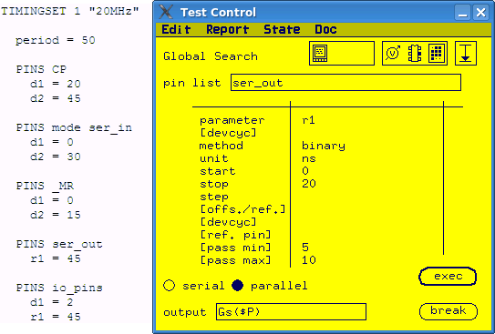

Global Search conversion
You can convert a global search test function to the test method library
ac_tml.AcTest.parametricFunctionalTest. Firstly, you need to define a spec to
control the hardware resource. Then in ac_tml.AcTest.parametricFunctionalTest,
you can use the spec as the parameter to shift.
About this task
Global search test function shifts a hardware resource in the specified range and executes a functional test on each value in the range. It tries to find a pass/fail or fail/pass transition in the specified range of the hardware resource.
The hardware resources include: drive edges, receive edges, input low/high level, output low/high level, clamp voltage, programmable load, IOL/IOH, DPS and period.
Procedure
Example
The following example shows how to convert Global Search to
ac_tml.AcTest.parametricFunctionalTest test method. The timing set used in the
example is listed on the left side.

In this example, a global search in done for the receive edge r1 of pin list ser_out. It is a binary search with the search range from 0 ns to 20 ns. The resolution is determined by the hardware. The low limit for the global search is 5 ns and the high limit is 10 ns.
To
convert this test function to ac_tml.AcTest.parametricFunctionalTest, you need
to:
- Define a spec r1_value to control the edge r1 for pin
list ser_out:
PINS ser_out r1 = r1_value
- Calculate the spec range. In this example the range of r1_value is the same as r1.
- Enter the parameter values for
ac_tml.AcTest.parametricFunctionalTest.spec
r1_value
resultPinList
ser_out
resultPinListMode
parallel
setupPinList
ser_out
setupPinListMode
parallel
method
binary
start
0
stop
20
step
resolution
passMin
5
passMax
10
Functional changes
- Introduced before SmarTest 6.3.2